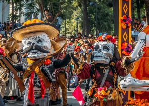

Conheça sobre a cultura do país
🎉Festas tradicionais espanholas
A maioria das cidades da Espanha, independente do tamanho, tem suas próprias festas populares, celebradas uma vez por ano.
A duração das chamadas Fiestas Populares varia e em alguns lugares as
celebrações podem durar até uma semana inteira.
São muitas as datas marcantes e separamos as principais festividades para vocês.
🎉La Tomatina: a guerra de tomates da Espanha

A história de origem da Tomatina remonta a uma briga de tomates de um grupo de jovens que arremessou tomates entre si
e após um deles cair durante o evento, a polícia dispersou a briga e obrigou o grupo a pagar pelo uso dos vegetais alheios. Isso ocorreu em 1945,
durante o desfile
Gigantes Y Cabezudos, que acontecia anualmente em Buñol. No ano seguinte, o grupo voltou à batalha com tomates próprios para não pagar multas.
A partir de então, o grupo passou a se reunir todos os anos e a atrair pessoas, que começaram a participar do evento.
🎉Feira de Abril de Sevilha

A Feira de Abril é a festa mais popular da cidade de Sevilha. Ocorre sempre uma ou duas semanas depois da Semana Santa. A festa começa oficialmente quando as luzes do portal são acesas. Esse portal é uma espécie de portão que marca a entrada da festa que chega a ter quase 50 metros de altura e é diferente a cada ano. A festa é muito grande e contêm área de jogos e brinquedos como montanha-russa, carrinho bate-bate, barco viking, etc.
🎉As Fallas de Valência

Uma das festas mais tradicionais da Espanha são as Fallas de Valência.
Celebrada no mês de março de cada ano, essa festa começa no dia 15 e termina no dia 19.
Aproximadamente 700 monumentos e esculturas construídos com papel machê ou madeira são distribuídos por toda a cidade para serem queimados no último dia de festa.